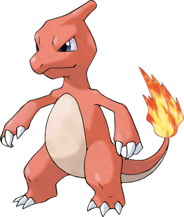

Reptincel est tiré du dinosaure ; il possède trois grandes et puissantes griffes acérées à chaque main et pied, qui l'aident notamment à déchirer la peau de ses ennemis lors des combats. Sa peau est plus foncée que celle de sa pré-évolution et son museau s'est allongé. Son crâne est désormais doté d'une crête. Sa queue, longue et terminée par une flamme, lui sert notamment à élever sa température, le rendant plus puissant en combat, et à faire chuter ses adversaires avant de les achever.